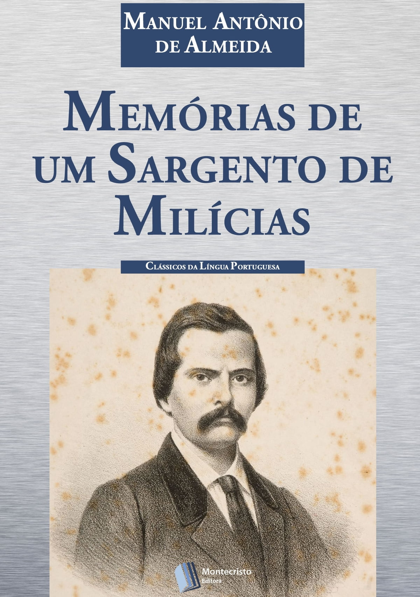
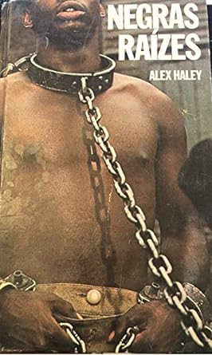
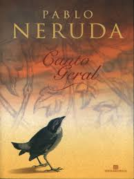

Memórias de um Sargento de Milícias

Este romance do século XIX revela aspectos da vida cotidiana no Brasil da época e, implicitamente, a presença africana na formação da nação. Através das páginas deste livro, observamos traços da herança africana nas tradições culturais, na religiosidade e nas relações sociais.
Quarto de Despejo

Carolina Maria de Jesus, uma catadora de papel, narra sua vida nas favelas de São Paulo. Em suas palavras, descobrimos a luta, a resiliência e a voz da população negra e pobre, cujas histórias muitas vezes foram negligenciadas. O livro é um poderoso testemunho da vida sob a sombra da Diáspora Africana.
Negras Raízes

"Raízes" de Alex Haley é uma narrativa épica que segue a jornada de Kunta Kinte, um africano capturado e escravizado nos EUA no século XVIII. A história abrange gerações, explorando a brutalidade da escravidão, a resiliência e a preservação da identidade cultural. Ao entrelaçar eventos históricos reais com a ficção, a obra oferece uma visão comovente da diáspora africana e suas complexidades. A adaptação televisiva ampliou seu impacto, solidificando o legado duradouro deste relato pessoal e histórico.
Canto Geral

Embora o autor seja chileno, seu "Canto Geral" inclui o notável "Canto Negreiro", que celebra a resistência e a herança africana na América Latina. O poema é uma homenagem à contribuição africana para a formação do continente.